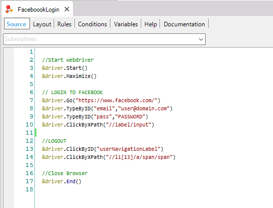
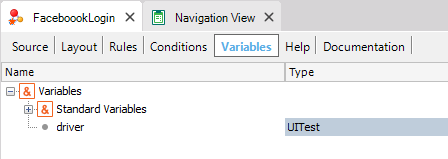
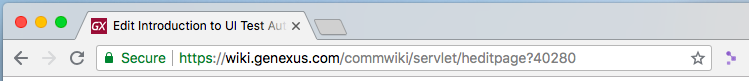
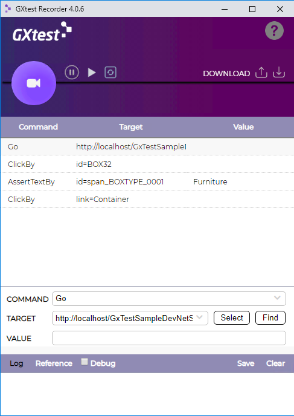

Introduction to UI Test for Web Automation
UI testing of Web Apps on GXtest v4 is now available using native GeneXus programming, by using a specific object in GeneXus IDE: the UI Test for Web object
This test case (KB Object) is a special GeneXus Procedure with the ability of controlling the browser, by using different commands like opening the browser, clicking or typing over different controls, checking text on panels and values over controls (variables/ attributes), etc. So, a typical test case will look something like this:  The variable named &driver is autogenerated and provides automation capabilities over the desired browser using the UITest External Object.  This External Object (UITest) is responsible for implementing the adaptation layer over Web Driver Protocol. Each GXtest command is designed to work on top of the protocol, using native .NET and Java Web Driver implementations, to be able to run a test over any Selenium Server. This implementation enables GeneXus language to take advantage of this standard inside the knowledge base. Creating TestsCreating a test case command by command could take a lot of time and the user will need to know how to target HTML elements. To enable this, GXtest provides recording capabilities using GXtest Chrome Extension Recorder. With this extension installed on your Chrome, you are able to navigate through the web app you want to test while capturing the test steps and validations:  Once you finished your recording, you will be able to test your flow directly on the browser, before you import it to your Knowledge Base to edit it.  Typical editing actions after recordings include: - To add Assertions. - To add test iterations to use different data inputs and outputs. - To add/retrieve stored data validations using for-each statements or data providers. - Debugging test case on different remote browsers (docker/cloud). - To schedule test executions on Jenkins or other CI servers. |

| Backlinks | |
| Toc:GXtest v4 | Category:UI Test for Web object |